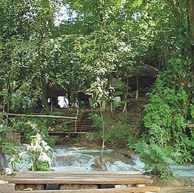
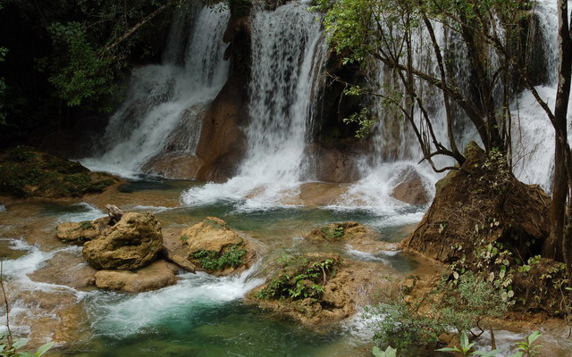
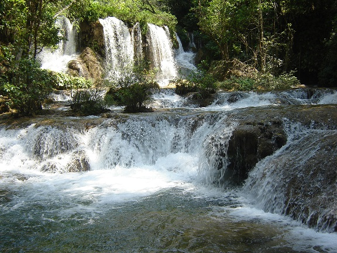
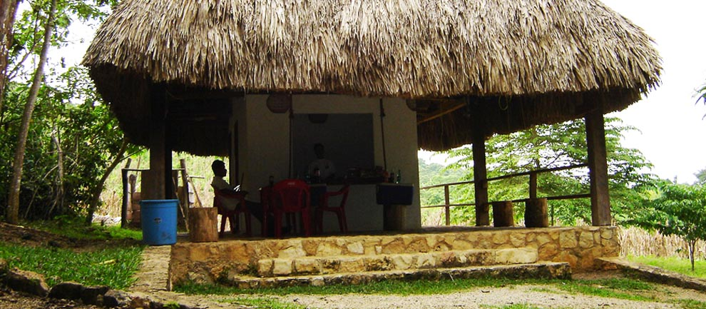
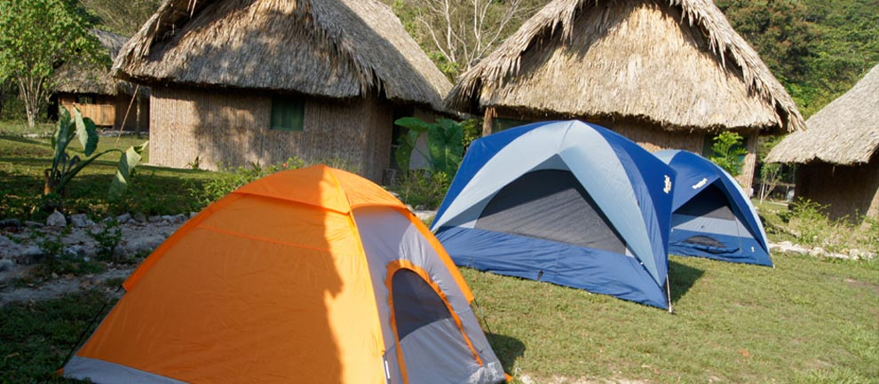

En verano cientos de aves llenan el cielo por las tardes, sus nidos se encuentran en las cavernas de la cascada. Las golondrinas es un centro eco turístico donde se puede admirar la caída de agua Ch`en Ulich.
Se localiza a 40 min. De la reserva de Montes Azules, en el centro Eco turístico Las Nubes en el municipio de Maravilla Tenejapa.
Las nubes, se encuentra a 124 km de Comitán de Domínguez. Cuando llegue al parque nacional Lagunas de Montebello, tomara la carretera fronteriza del sur hasta que se topara con una señalización de las Nubes. Después del parque Nacional Lagunas de Montebello aproximadamente a 60 Km, pasando el parque nacional Lagunas de Montebello.
Partiendo de Palenque
Tomará la carretera federal 19, llegara hasta el crucero Shua, continuara por la fronteriza del sur, antes de que usted llegue al poblado de Nueva Palestina encontrara un desvío de 500 m. que conduce al centro.
Podrá admirar el paisaje que estas bellas cascadas tienen para usted, tomar fotográficas de toda la selva, camping, podrá hospedarse si así lo desea.





posicione el mouse sobre las imágenes